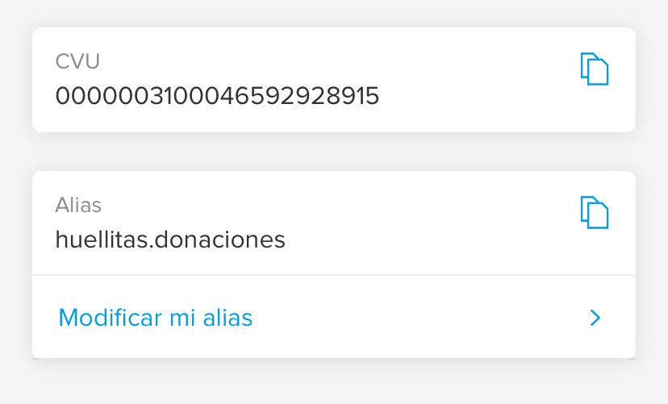

Hacer un donativo a proteccion animal funes
Actos de generosidad y compromiso como el que estás a punto de realizar, permiten que en
Proteccion animal funes podamos seguir desarrollando nuestra labor, por lo cual te estamos muy
agradecidos. De esta forma, tu aportación económica se convierte en acción directa para la protección de
animales en situación de peligro.
¿Cómo donar?
Para facilitar las donaciones hemos habiltado una cuenta bancaria la cual es destinada para ellos

Alias:Huellitas.donaciones